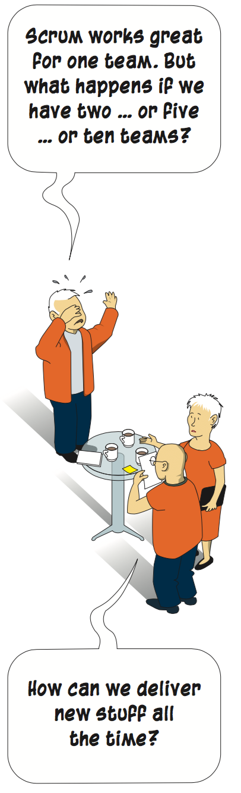
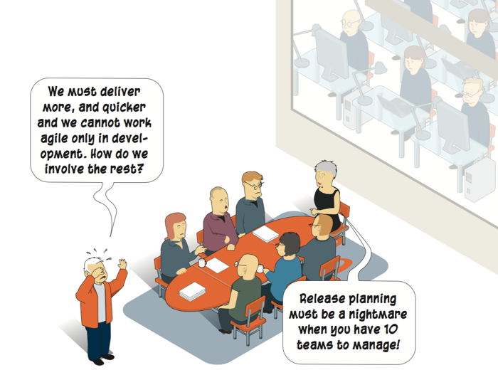
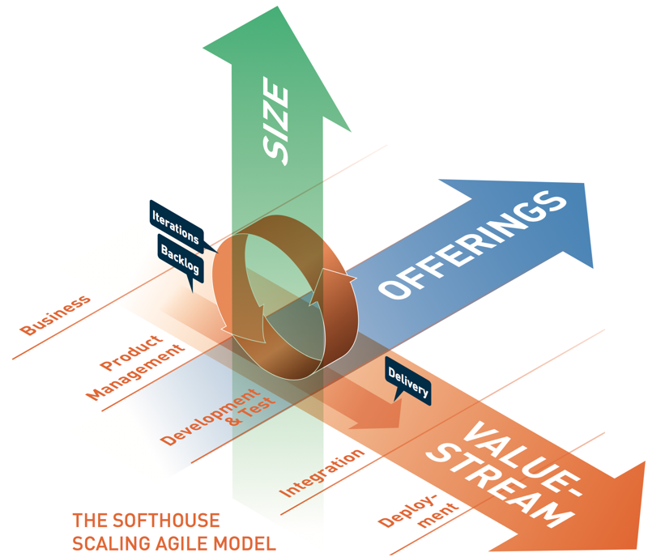

Scaling agile in five minutes
Basement Apps Ltd
having unexpected success with a social media app for musicians.

Software Supply Ltd
needs more diverse development teams as the company enters the IoT market.

GigaMeg Corporation
has introduced a breakthrough technology for mobile antennas and intend to make huge profit before the competition catches up.

With success in business, growing pains arrive. Organisations run- ning Lean & Agile are no exception.
The nature of the growing pains can be very different, depending on the kind of company and the nature of the growth. For some enterprises, it’s about expanding ambitions, e.g. business visions or product scopes. For others, it’s about expanding operations, e.g. volumes of sales or staff. In any of these instances, the organisation and methods must be adapted and scaled.
As challenging as this may seem, situations like the ones described above are actually great opportunities for agile transformation – to implement new methodology and to extend the culture within the organisation!
THE BASIC CONCEPTS OF SCALING AGILE
What is Scaling Agile?
Here, we use a very broad de nition of the concept Scaling Agile. To us, it includes all processes where an organisation is ”doing things more agile than before”. In addition, we don’t consider this as a process which takes place as the company slowly evolves. Instead, Scaling Agile is about getting started here and now, according to the present conditions and limitations. Sometimes it means radical changes of how things are being done. Most oftenly, it is only engaging a minor part of the company during the rst phase. But as more staff is included and the culture matures, the scaling speeds up.
Different types of scaling
The scaling challenge may be very different for various types of companies. Here are some typical cases.
The small, innovation-driven company ...
... has run Scrum or Kanban in a handful of teams, but now needs to increase their number. This may be due to an increased demand for their product, or the introduction of a new product.
The mature mid-size company offering many services...
... builds apps or customized software solutions adapted to a system platform. There is an increasing need to simplify the testing and release process of these additions.
The big, global corporation with many people involved ...
... deals with hundreds of developers and many stakeholders who need to be productive together and having transparent synlighet in releaseplans and commitments
The starting point of scaling: a good look in the mirror
Succesful scaling is based on structured analysis, which in its turn is based on careful and open-minded observation. To get an overview of the current state, the factors in the table may be considered:
- Your current state
- What is your product or service?
- SW products to market
- SW + HW, Internet of things
- How is the SW delivered – as a permanent license or as a subscription? IT to support business
- Is the system business critical?
- Size/co-location
- How does the software architecture and the infrastructure look?
- What’s the level of agile maturity?
- How big is your budget?
The use of a tool, like a Scaling Canvas (see page #), not only makes it easier to think – it also makes it harder to deny that there are problems present. The rst step of all change processes is insight. All insights don’t have to be pleasant to lead to fruitful results – quite the opposite!
The guiding lights for change: the prioritized Business Drivers
The guiding lights of the scaling process should be the prioritized business drivers. In the Softhouse model, we have de ned seven but your mileage may vary. We recommend that the organisation picks three. It is not always easy to let go of the other ve so this part may trigger a discussion about the mission and business strategies of the entire organisatoin.

It is a great challenge to apply lean & agile frameworks like Kanban and Scrum in new con gurations and across several teams. The theory behind the different frameworks have often been described and developed from the perspective of individual teams. The communication has been based on informal contacts and short distances between the co-workers.
To deal with these challenges, a multitude of methodologies for scaling Agile has been suggested: SAFe, DAD, LESS, Scaled Professional Scrum and several others (see page 14). To handle and understand these methodologies, we have introduce the Softhouse Scaling Agile Model. It is based upon three dimensions:

Size
is the number of people and teams involved within a value stream.
Example of scaling challenge: In Company Gamma, the demand for new functionality increases
for a product or service. An op- portunity arises to increase the market share, either by increasing
the number of staff within a team or the number of teams.
Offerings
are the products and services marketed by the organisation. The tool handles each offering as an individual value stream, producing an self- contained product or service (including enabler and consumer) that can be released indepen- dently of each other.
Example of scaling challenge: Company Beta1 develops new products and de ne new business segments.
There is a transition go- ing on from being a product-focused enterprise to a service-focused business.
Example of scaling challenge: Company Beta2 has a big monolithic product that has grown over the years.
Every new release takes longer and longer time and involves more and more people to manage dependencies.
A new architecture is de ned to allow more independent development and releases.
Value stream
is the concept-to-cash value stream ow. This represents all activities and steps from an identifed business need until we have the revenue in our hand.
Example of scaling challenge: Company Alfa wants to transform the entire value stream according to Agile methodology. This in- cludes not only the developer teams but also marketing, integration and operations.